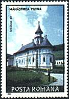
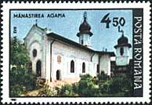
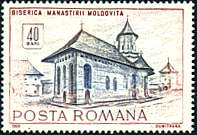
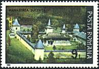

The National Museum of Art of Romania
Byzantium after Byzantium


The theory of the Byzantine permanence has today an ever increasing number of proponents. A radical branch of modern historiography placed the fall of the Lower Empire in 1204, with the establishing of the "Latins" in Constantinople; the chronology in most textbooks stops at the year of the conquest of Constantinople by the Turks, 1453, when the Byzantine political power disappeared, destroyed by the armies of Mehmed II.
 |
 |
 |
 |
Nevertheless, historians no longer deny that for centuries, until the down of the modern age with the establishment of national states in Southeastern Europe, the institutions and ideas in this part of the world preserved and defended the only form of civilization to which they were culturally connected: those of Byzantium.
 |
 |
 |
The formula Byzantium after Byzantium concisely defines some of the most dramatic centuries of world history. It evokes the amazing vitality of the Hellenic-Latin synthesis which fulfilled throughout the Middle Ages the high calling to educate and guide people, even after they fell into a long period of slavery. It also points out the antecedents of a great part of European civilization which has its origins in this superb civilization, comprising all the best that the Old World had to offer. (After Virgil Candea, Introduction to Byzantium after Byzantium by Nicolae Iorga, ISBN 973-9432-09-3).
|
The
icon of Saints Simeon and Sava, shown on the right, is exposed in the
National Museum of Arts of Romania. It originates from the cathedral
Curtea de Arges. It's a Walachian workshop, painted between 1522 -
1523, tempera on wood. |

The different stamps displayed above show monasteries and churches from Romania. Please move the mouse pointer over the stamps for more information.
| Published:
06/09/2001. Revised: 08/06/01. Copyright © 2001 by Victor Manta, Switzerland. All rights reserved worldwide. |